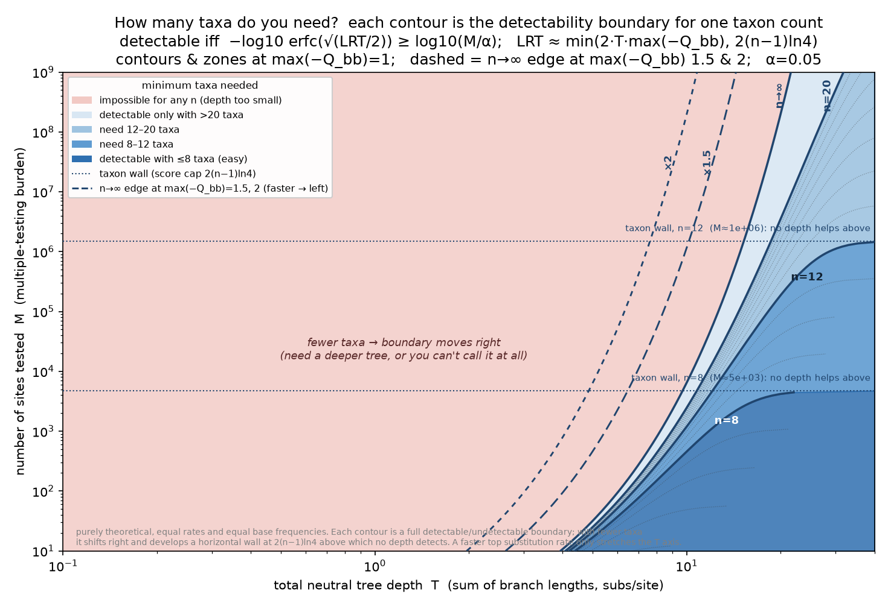

Per-site phyloP asks, base by base, whether a site is evolving slower than neutral. Whether it can find anything depends on your tree — and on some trees it cannot call a single site, no matter how conserved. Here is why, and how to tell in advance.
phyloP scores every column of an alignment for conservation. Genome-wide that is millions of tests, so the scores are corrected for multiple comparisons: to be called conserved, a site's score must clear a bar that rises with the number of sites you test — more tests, higher bar.
The catch is that there is also a ceiling on how high any per-site score can possibly go, and that ceiling is set by your tree. If the ceiling sits below the bar, nothing passes — phyloP returns roughly zero conserved sites. Not because nothing is conserved, but because the test cannot resolve conservation on that tree. It is a power problem, not a biology result.
The strongest evidence a site could ever show is perfect conservation — the same base in every species. How surprising is that under neutral evolution? It is essentially the chance that neutral evolution produced zero substitutions anywhere across the whole tree.
So the ceiling is really a substitution count. A deeper tree — more total branch length, i.e. more evolutionary time summed over all branches — means neutral evolution would be expected to make more substitutions, which makes seeing none more surprising, which makes a stronger score. The ceiling climbs with total tree depth.
The climb doesn't go on forever. There are two distinct ways a tree can leave phyloP underpowered, and your ceiling is set by whichever one binds first:

In one line: a conserved site is callable only when \(-\log_{10}\operatorname{erfc}\!\big(\sqrt{\mathrm{LRT}_{\max}/2}\big)\ge\log_{10}(M/\alpha)\) — the tree's best-possible score clears the correction for \(M\) tests at level \(\alpha\); deeper trees and more species raise the left side.
Want the derivation — where the ceiling and the two limits come from, step by step? See the full detectability math.